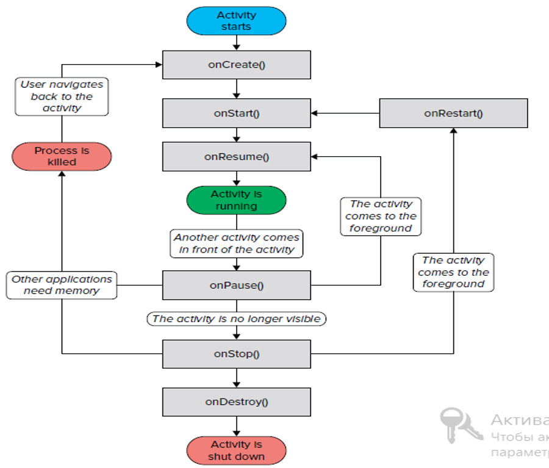

Режа
- Андроид иловаларида ҳодисалар ва жараёнлар.
Activities,
Intents
.
- Activity яшаш цикли
- dialog ойналарда activity ларни ҳосил қилиш
- Intent лар ва улардан фойдаланиш. Жараёнларни бир – бири билан боғлаш
- Fragment лардан фойдаланиш
Activity нима?
Фойдаланувчи интерфейсини бошқарувчи асосий .java кенгайтмали файл бўлиб, Activity синфидан ворис олган ҳолда яратилади.
Агар яратилган илова бир нечта activity дан иборат бўлса, у ҳолда битта activityни (файлни) асосий деб кўрсатиб қўйилиши лозим ва бу activity илова ишга туширилганда чақирилади.
Одатда activity дастур интерфейсини ўзида мужассамлаштирган XML файлни res/layout папкасидан чақириб олади. Бизнигн мисолимизда activity_main.xml файли қуйидагича чақириляпти:
setContentView (R.layout.activity_main);
Иловада ишлатилаётган ҳар бир activity AndroidManifest.xml файлида қуйидагича эълон қилиб қўйилиши лозим:
- onCreate() — activity ишга тушганда биринчи марта чақирилади
- onStart() — activity натижаси фойдаланувчига кўринганда чақирилади
- onResume() — activity фойдаланувчи томонидан ишлатилаётганда чақирилади
- onPause() — жорий activity фаолияти вақтинчалик тўхтатилиб бошқа activity фаоллаштирилганда чақирилади
- onStop() — activity фойдаланувчига кўринмай қолганида чақирилади
- onDestroy() — activity тўхтатилган вақтда чақирилади
- onRestart() — activity иш фаолияти тўхтатаилиб қайта ишга туширилганида чиқарилади
Activity яшаш цикли визуал кўринишда

Activity ларни бир – бирига боғлаш
Одатда иловалар бир нечта activity лардан иборат бўлади;
Демак биз бир ҳолатдан иккинчи ҳолатга (илованинг бир ойнасидан иккинчи ойнасига) ўтиш зарур бўлади;
Android иловаларида, activity лараро муносабатни ўрнатиш учун intent лардан фойдаланилади.
Одатда ҳар бир activity битта layout ни (xml файлни) фойдаланувчига кўрсатиб бериш учун хизмат қилади
Intent дан натижа (бирон – бир хабар) қайтариш
startActivity() методи керакли activity ни чақиради, лекин натижа (қиймат) қайтармайди.
Мисол учун сизнинг дастурингизда user name ва password киритиш майдони бор.
Ушбу ҳолатда фойдаланувчи ойнасига қандайдир хабар ёки қиймат қайтариш лозим бўлади .
Демак бир activity дан иккинчи activity га қиймат жўнатиш учун, startActivityForResult() методидан фойдаланилади.